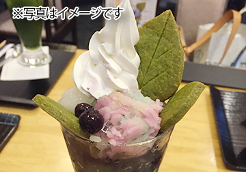
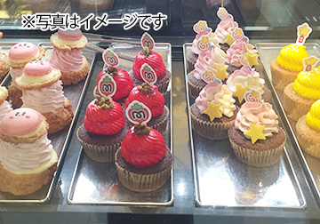
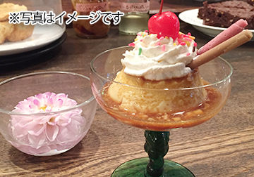
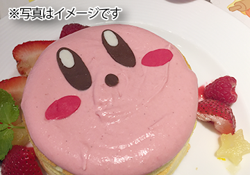
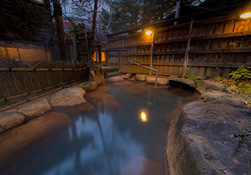
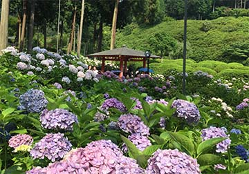

すきなもの
お菓子
どちらかといえば洋菓子派。なんでも食べますが最近のお気に入りは以下の通り。

ステラおばさんのチョコチップクッキー

ぺこちゃんのほっぺ

セブンのシュークリーム

シャトレーゼのバッキー
旅行
国内外。バックパック背負って一人旅も好きです。
海外ならヨーロッパ、国内なら温泉。和風な街並みの場所が特に好み。
節約
たまの旅行や外食にお金をかけたいため普段の生活では節約を心がけています。
安く物資を手に入れられた時の達成感が最高。 スーパーに行ったらお勤め品コーナーを物色するのがルーティン。
１００均や３００円均一ショップは好き過ぎて１時間は過ごせます笑
お花
花を見るのが好き。花畑を見に行ったり、植物園に行ったり。
好きな花は桜、菜の花、ネモフィラ、チューリップ、紫陽花、ヴィオラ、ダリア、ラナンキュラスなど
ゲーム
兄の影響で幼い頃からゲームに親しむ。今はNintendo switchのゲームを楽しんでいます。
- プレイ時間の多い順
- ゼルダのブレスオブワイルド（９５時間）
- あつまれどうぶつの森（５００時間）
- スプラトゥーン（１１００時間）
好きな言葉
「cafe」「北欧」「温泉旅館」「日替わりランチ」「スパ」「半額」